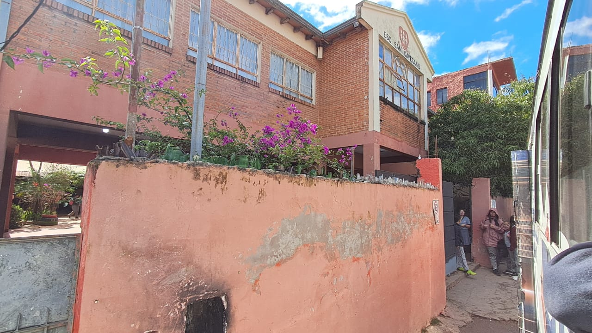

CTJ
Proyecto de Servicio
"COMPARTIMOS, APRENDEMOS
Y SERVIMOS"
Servimos con Corazon
Una experienciade convivencia y aprendizaje en el colegio San Cayetano, Bañado Sur, Asunción.

CTJ
Proyecto de Servicio
Servimos con Corazon
Una experienciade convivencia y aprendizaje en el colegio San Cayetano, Bañado Sur, Asunción.

El miércoles 2 de septiembre, los alumnos del Colegio Técnico Javier realizamos una visita a escuelas del Bañado Sur. Este sitio se enfocará especificamente en la visita hecha a la escuela y colegio San Cayetano de Fe y Alegría, cuyo objetivo fue brindar ayuda y soporte a los alumnos y profesores de la institución al conocer las probelmáticas atraves de entrevistas, observación y recolección de documentos con datos relevantes. La visita duro desde las 9:00 hasta las 12:30 horas en la cual una gran variedad de actividades fueron realizadas, lideradas por varios equipos con distintos miembros, cada uno aportando algo al equipo. Se realizaron actividades como cuenta cuentos, refuerzo escolar, club de artes, club de ciencias, actividades recreativas y una merienda compartida. Fue una gran experiencia para todos los involucrados la cual resulto con mucha información recolectada la cual utilizaremos para brindarles ayuda a sus areas respectivas.
Ver ubicación en el mapa →Cada actividad nos acerca más a la comunidad y a sus sueños.
La escuela Básica N° 1538 y colegio Priv. Sub. San Cayetano de Fe y Alegría ubicada en el barrio con el mismo nombre de la comunidad, en el Bañado Sur, Asunción.
Funcionó desde 1976 como una escuela parroquial que, desde el año 1992, pasa a formar parte de Fe y Alegría.
Cuenta con una población con diferentes niveles socio-económico, que reúne a personas provenientes de diferentes localidades.
El número de integrantes de cada familia es bastante elevada, la comunidad fue creciendo tanto en el nivel económico como formativo. Tal es así que podemos decir que cuenta ya con personas idóneas para cada oficio o profesión. En una minoría se puede visualizar un grupo personas con escasos recursos cuyas necesidades son diversas: una buena alimentación, la presencia de los padres para una mejor atención y acompañamiento de sus hijos/as, atención médica
y odontológica seguimientos de las necesidades especiales de aquellas que las necesitan entre otros. La mayoría de las familias se ocupan de actividades informales, temporales, los primeros sin poder obtener ingresos fijos para brindar una vida digna a los miembros de sus familias.
La comunidad cuenta con un puesto de salud, donde acuden niños y niñas para su atención médica, Odontológica, desparasitación, vacunación entre otros, cae descartar que este puesto no abastece con la demanda de la comunidad.